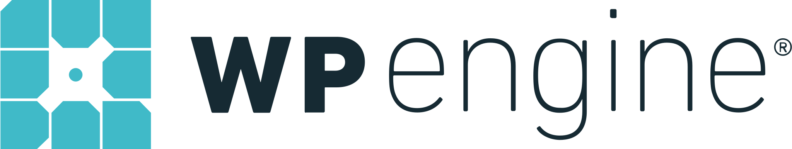
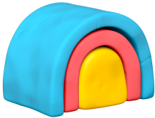
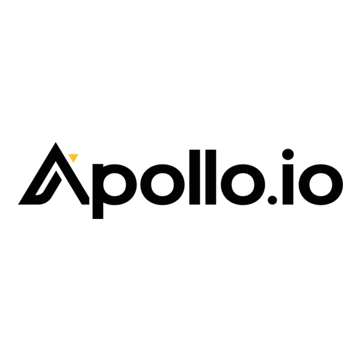

LVL 99

APIFY
Cloud Scraping & Automation Platform - THE #1 WEAPON
The backbone of Actor Arsenal. Apify provides the cloud infrastructure to run scrapers, automations, and AI agents at scale. Skip the infrastructure headaches and focus on extracting data. Every Actor in our arsenal runs on Apify's battle-tested platform.
- 2000+ pre-built Actors ready to run
- Automatic proxy rotation & anti-bot bypass
- Serverless browser automation
- API integrations & webhooks
Deploy on Apify
LVL 99
SEMRUSH
The Ultimate SEO War Machine
The all-in-one toolkit trusted by 10+ million marketers. Dominate search with comprehensive keyword research, competitive intelligence, site audits, and rank tracking that leaves competitors in the dust.
- Keyword research with intent analysis
- Competitor traffic & strategy intelligence
- Technical SEO site audits
- Backlink analysis & gap finder
Unlock Semrush
LVL 95
DATAFORSEO
Raw SEO Data API Power
Direct API access to SERP data, keywords, backlinks, and on-page metrics. Build SEO tools and dashboards with fresh, reliable data. Pay only for what you use with no monthly minimums.
- Real-time SERP results (Google, Bing, Yahoo)
- Keyword volume, CPC & competition data
- Backlink & referring domain analysis
- Pay-per-request pricing model
Get API Access
LVL 90

LOCALFALCON
Local SEO Rank Tracking Grid
See exactly where your Google Business Profile ranks across your entire service area. Visual grid maps reveal ranking patterns competitors can't see, powered by Falcon AI recommendations.
- Geographic ranking grid visualization
- Falcon AI optimization recommendations
- Competitor local rank monitoring
- Historical ranking trend analysis
Track Local Ranks
LVL 88

WPENGINE
Premium WordPress Hosting
Managed WordPress hosting that makes sites 2-6x faster. Enterprise security, automatic backups, staging environments, and expert support so you can focus on content, not server maintenance.
- Blazing fast CDN & caching
- Enterprise-grade security & SSL
- One-click staging environments
- Daily automated backups
Host With WPEngine
LVL 92

CLAY
Data Enrichment & Outreach Engine
Build lead lists with 50+ data providers in one platform. Waterfall enrichment finds the data others miss. Automate personalized outreach and sync directly to your CRM.
- 50+ data enrichment providers
- Waterfall enrichment maximizes coverage
- AI-powered personalization at scale
- CRM & outreach tool integrations
Start Enriching
LVL 87
CUSTOMERS.AI
AI Visitor Identification & Automation
Reveal anonymous website visitors and turn them into leads. AI-powered identification finds emails, phones, and company info. Automate outreach through email, ads, and SMS.
- Identify up to 20% of anonymous visitors
- Email, phone & company enrichment
- Meta ad audience auto-sync
- Automated email sequences
Reveal Visitors
LVL 94
FIRECRAWL
AI-Powered Web Scraping API
Convert any website to LLM-ready markdown with one API call. No selectors, no maintenance. Perfect for RAG applications, AI agents, and feeding fresh web data to language models.
- Instant website-to-markdown conversion
- JavaScript rendering & bot bypass
- Structured JSON extraction with AI
- Optimized for LLM consumption
Try Firecrawl
LVL 100
CLAUDE CODE
AI Pair Programming From The Future
The AI coding assistant that actually understands your codebase. Claude Code by Anthropic reads, writes, debugs, and refactors code with superhuman context. It's like having a 10x developer who never sleeps.
- Deep codebase understanding & navigation
- Multi-file editing & refactoring
- Terminal command execution
- Git operations & PR creation
Try Claude Code
LVL 96
GOOGLE WORKSPACE
Business Productivity Command Center
The productivity suite that runs modern businesses. Gmail, Drive, Docs, Sheets, Meet, and Calendar - all integrated with enterprise security, AI-powered features, and seamless collaboration for teams of any size.
- Custom business email with Gmail
- 30GB-5TB cloud storage per user
- Real-time collaboration on Docs, Sheets, Slides
- Enterprise security & admin controls
Get Google Workspace
LVL 93
CAMOUFOX
Stealth Anti-Detect Browser
Open source anti-detect browser built on Firefox with robust fingerprint injection at the C++ level. Invisible to anti-bot systems through fingerprint rotation without JavaScript injection - blend into regular traffic undetected.
- C++ level fingerprint spoofing (no JS injection)
- Human-like mouse movement algorithms
- WebGL, fonts & WebRTC anti-fingerprinting
- Memory-optimized & debloated Firefox base
Try Camoufox
LVL 95
CRAWLEE
Build Reliable Scrapers. Fast.
The open source web scraping library for JavaScript and Python by Apify. Crawlee handles blocking, proxies, browser automation, and crawling orchestration so you can focus on extraction logic instead of infrastructure.
- Automatic proxy rotation & blocking bypass
- Built-in browser automation (Playwright/Puppeteer)
- Request queue & crawl orchestration
- Forever free & open source
Get Crawlee
LVL 97

ZAPIER
Automate Everything. Connect 8,000+ Apps.
The automation platform that connects your entire tech stack. Build workflows in minutes with 8,000+ app integrations, AI-powered agents, and chatbots. No code required - just point, click, and automate.
- 8,000+ app integrations
- AI agents & chatbots built-in
- Visual workflow builder (Canvas)
- No-code automation in minutes
Try Zapier
LVL 96
MAKE
Visual Automation For Complex Workflows
Formerly Integromat, Make is the visual automation platform for building sophisticated workflows. Drag-and-drop interface with powerful data transformation, branching logic, and error handling for enterprise-grade automations.
- Visual drag-and-drop scenario builder
- Advanced data routing & transformation
- 1,800+ app integrations
- Complex branching & error handling
Try Make
LVL 94

N8N
Self-Hosted Workflow Automation
The open source automation platform you can self-host. Full control over your data with 400+ integrations, custom code nodes, and AI capabilities. Fair-code licensed - free for personal use, affordable for teams.
- Self-hosted or cloud deployment
- 400+ native integrations
- Custom JavaScript/Python code nodes
- AI workflow capabilities
Try n8n
LVL 96

APOLLO
AI-Powered B2B Sales Platform
The unified sales platform with 210M+ verified contacts and 30M+ companies. Apollo combines lead generation, outbound automation, and deal management into one AI-powered system. Teams report 75% more meetings booked while cutting manual work.
- 210M+ verified B2B contacts
- AI-powered multichannel outreach
- Real-time data enrichment
- Salesforce & HubSpot sync
Try Apollo
LVL 95
WISE
International Money Without The BS
The smartest way to send money internationally. Wise (formerly TransferWise) uses the real mid-market exchange rate with transparent, low fees. Hold and convert 40+ currencies, get local bank details in 10+ countries, and spend worldwide with the Wise card.
- Real mid-market exchange rates
- Up to 6x cheaper than banks
- Multi-currency account (40+ currencies)
- Local bank details in 10+ countries
Try Wise
LVL 98

RAILWAY
Ship Software Peacefully
The deployment platform that lets you run applications without being burdened by infrastructure. Connect your repo and Railway handles everything - no Dockerfiles, no Kubernetes, no AWS headaches. Zero-config deploys with instant private networking, automatic scaling, and hard spending limits.
- Zero-config deployment from GitHub
- 100 Gbps internal networking
- Automatic scaling & PR previews
- Hard spending limits (no bill shock)
Deploy on Railway
LVL 99
VERCEL
Develop. Preview. Ship.
The platform for frontend developers. Vercel provides the speed and reliability innovators need to create at the moment of inspiration. Deploy Next.js, React, Vue, or any frontend framework with zero configuration. Automatic HTTPS, global edge network, and instant cache invalidation.
- Zero-config deployments for any framework
- Global Edge Network (100+ locations)
- Preview deployments for every PR
- Built-in analytics & Web Vitals
Deploy on Vercel
LVL 97
V0
From Idea to Production in Seconds
AI-powered app generator by Vercel. Describe what you want and v0 builds working React components, full applications, and landing pages in minutes. One-click deploy to Vercel, push to GitHub, or copy the code. The fastest way to go from concept to live website.
- AI generates full React/Next.js apps
- One-click deploy to Vercel
- Visual design mode with live preview
- Hundreds of ready-made templates
Build with v0
LVL 98
MANUS AI
The World's First General AI Agent
Autonomous AI that thinks, plans, and executes complex tasks independently. 100+ specialized agents working in parallel for research, coding, data analysis, and web development. Runs on dedicated cloud VMs - just describe what you need and Manus delivers results.
- 100+ parallel AI agents
- Autonomous task execution
- Wide Research for bulk analysis
- Cloud-based virtual machines
Try Manus AI